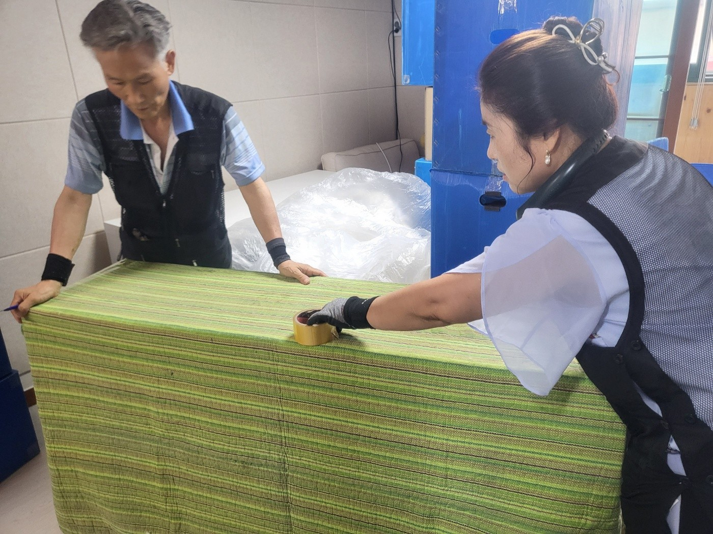
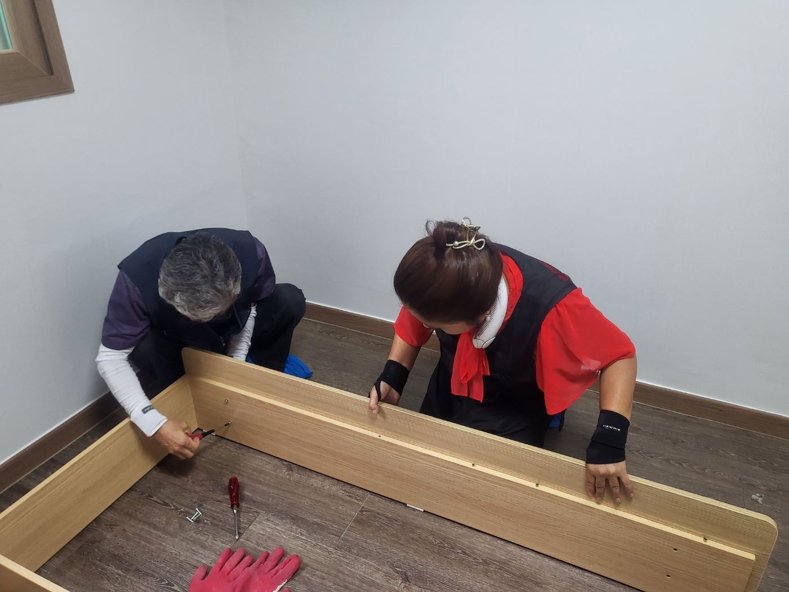
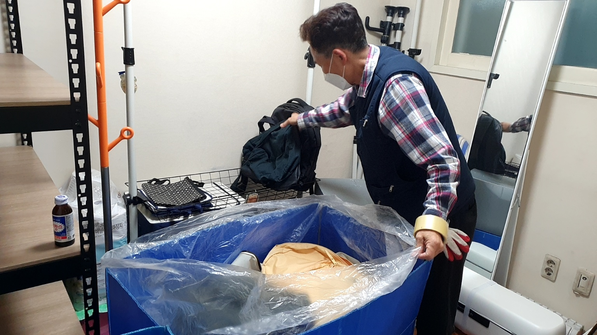
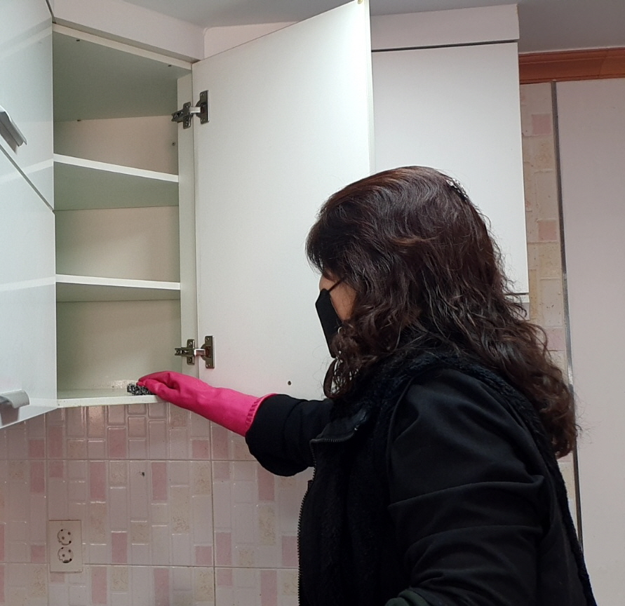
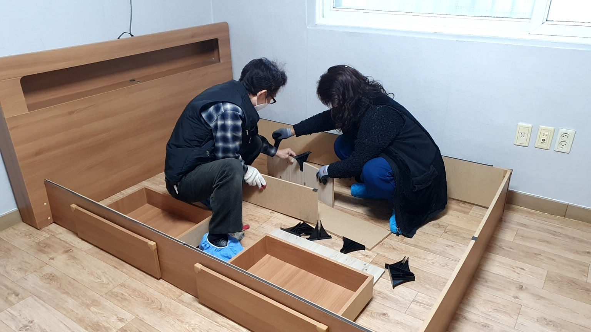
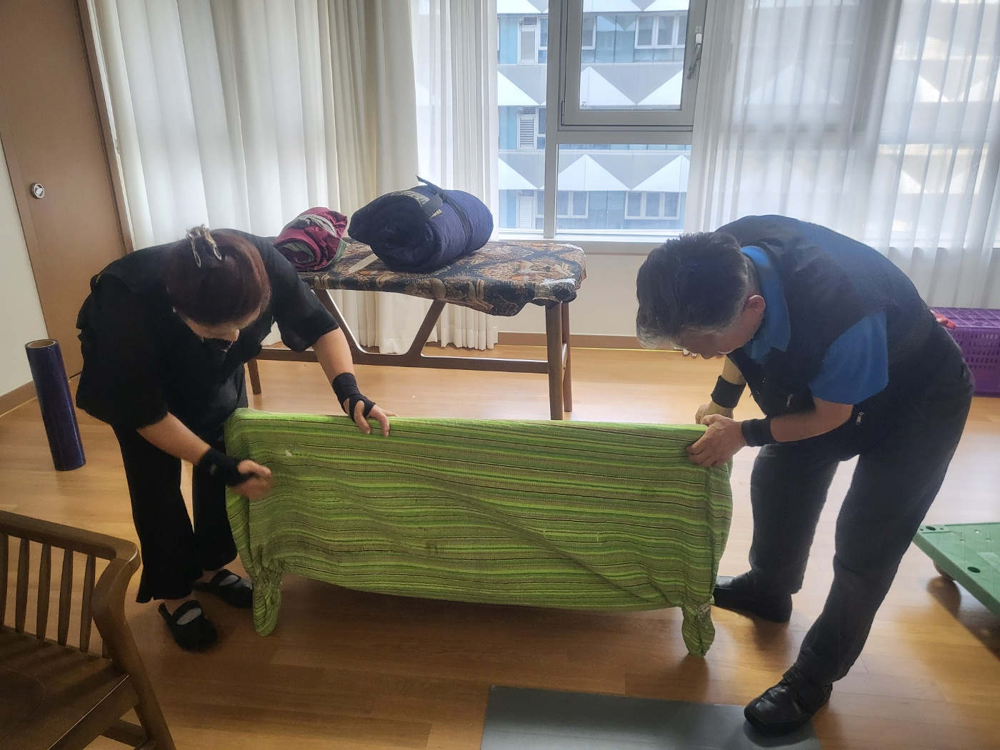

01
사장 부부가 직접! (하청X)
외부 업체에 일을 넘기지 않습니다. 사장 부부가 현장에 직접 방문해 작업하기 때문에, 누가 오는지 미리 아는 이사가 됩니다.
서울 · 경기 원룸이사 전문
내 이사, 누가 오는지부터 확실하게.
반포장이사도 출발지 잔짐까지 꼼꼼하게.
상담부터 현장 마무리까지 부부용달이 함께합니다.

30년용달·이사 경력
4,000건+포장·운반 작업 경험
서울·경기이사 전문
하루 1건포장이사 진행
상담한 곳과 실제 오는 작업자가 다를까 봐
부부용달은 하청 없이 사장 부부가 직접 방문합니다. 상담부터 현장 작업까지 같은 팀이 맡습니다.
반포장인데 짐을 어디까지 싸야 할지 몰라서
부부용달의 반포장은 출발지 짐을 전부 포장하는 방식입니다. 주방·욕실 잔짐까지 포장해 드리고, 도착지에서는 포장된 짐을 풀어드립니다.
여자 혼자 이사를 준비하는 게 부담스러워서
여자 사장님이 함께 방문해 주방·생활용품처럼 손이 많이 가는 짐도 세심하게 살핍니다.
현장에서 비용이 달라질까 봐
짐의 양, 이동 거리, 건물 환경, 사다리차 필요 여부 등을 미리 확인하고 작업 범위와 견적을 사전에 안내합니다.
부부용달 소개

외부 업체에 일을 넘기지 않습니다. 사장 부부가 현장에 직접 방문해 작업하기 때문에, 누가 오는지 미리 아는 이사가 됩니다.

고객님이 잔짐을 미리 모두 싸 두실 필요가 없습니다. 출발지의 주방·욕실 잔짐까지 포장하는 것이 부부용달 반포장의 핵심입니다. 도착지에서는 포장된 짐을 잘 풀어드리고, 이후 정리는 천천히 고객님께서 하시면 됩니다.

주방·생활용품처럼 손이 많이 가는 짐도 여자 사장님이 함께 세심하게 살핍니다. 혼자 이사를 준비하시는 분도 편하게 상담하실 수 있습니다.

다음 현장 때문에 서두르지 않고 한 집의 이사에 집중합니다. 포장부터 운반, 정리와 마무리까지 꼼꼼히 진행하기 위한 원칙입니다. 하루 1건은 포장이사에만 적용됩니다.
이사 서비스
짐의 양과 이동 거리, 작업 환경을 확인한 뒤 필요한 범위에 맞춰 견적을 안내합니다.
직접 포장할 수 있는
소형 이사
바빠서 짐을 미리
싸기 어려운 분
포장부터 마무리까지
맡기고 싶은 분
침대, 쇼파만
따로 옮기는 분
가격표는 따로 두지 않습니다. 같은 서비스라도 짐의 양, 이동 거리, 건물 환경에 따라 달라지기 때문에 확인 후 견적을 안내합니다.

여자 사장님 동행
이사는 큰 가구만큼이나 주방·욕실·생활용품처럼 작은 짐이 많아 손이 갑니다. 부부용달은 여자 사장님이 함께 방문해 이런 짐을 세심하게 포장하고 현장에서 궁금한 점도 편하게 말씀하실 수 있게 돕습니다.
여성 고객 전용 서비스는 아니며, 누구나 같은 방식으로 상담하실 수 있습니다.
사진을 누르면 크게 볼 수 있어요.
네이버와 당근에 남겨 주신 후기입니다.
사장님 사모님의 숙련된 경력으로 가족의 이사마냥 꼼꼼하게 세심하게 신경써주신점 감사드려요
항상 같이 움직이는 팀이라고 하시던데 호흡이 잘 맞으시는듯 했어요.
이사나가는집도 꼼꼼히 빠짐없이 챙겨주시고 청소도 깨끗이 해주셔서 전집주인도 좋아하셨어요.
이름만 용달이지 포장이사도 완전 잘하시는 전문가셨어요.
상담부터 마무리까지
희망 날짜와 짐의 양을 알려 주세요.
필요한 범위를 확인하고 견적을 안내합니다.
이사 당일 사장 부부가 직접 방문합니다.
품목에 맞게 포장하고 안전하게 운반합니다.
신청한 서비스에 따라 정리하고 마무리를 확인합니다.
짐 정보가 정확할수록 이사 당일 견적이 달라질 가능성을 줄일 수 있습니다.
아니요. 부부용달의 반포장이사는 출발지 짐을 전부 포장하는 것이 핵심입니다. 주방·욕실 잔짐까지 부부용달이 모두 포장합니다.
고객님은 부동산 업무에만 신경 쓰시면 됩니다. 도착지에서는 포장된 짐을 잘 풀어드리며, 이후 정리는 천천히 고객님께서 하시면 됩니다.
네. 하청 없이 사장 부부가 현장에 직접 방문해 작업하며, 항상 함께 움직이는 고정팀으로 진행합니다.
물론입니다. 여자 사장님이 함께 방문해 주방·생활용품처럼 손이 많이 가는 짐도 세심하게 살핍니다. 편하게 전화나 문자로 문의해 주세요.
네. 포장이사는 하루 1건만 진행해 다음 현장 때문에 서두르지 않고 한 집에 집중합니다. 이 원칙은 포장이사에만 적용되며, 반포장이나 단품 운반에는 해당하지 않습니다. 예약 가능한 날짜는 상담 시 확인해 드립니다.
냉장고 청소, 침대 매트리스 건식 청소, 바닥 건식 청소, 바닥 스팀 청소, 피톤치드 소독은 포장이사에 제공되는 서비스입니다. 다른 이사 방식에 기본으로 포함되는 것은 아니며, 청소 범위와 적용 조건은 상담 시 안내드립니다.
희망 이사일, 출발지와 도착지, 엘리베이터 유무, 큰 가구·가전, 희망 서비스를 알려 주세요.
특히 잔짐까지 최대한 상세한 짐 사진을 보내 주시고, 버리실 짐도 함께 보내 주셔야 합니다. 짐 정보가 정확할수록 이사 당일 견적이 달라질 가능성을 줄일 수 있습니다. 동·호수까지 자세한 주소는 처음에는 필요하지 않습니다.
짐의 양, 이동 거리, 건물 환경(엘리베이터·계단), 작업 인원, 사다리차 필요 여부 등에 따라 비용이 달라질 수 있습니다. 이런 조건은 견적 전에 확인하고 사전에 설명드립니다.
네, 가능합니다. 부부용달은 이삿짐 외에도 각종 침대, 쇼파 이전설치를 전문으로 하고 있습니다. 분해, 포장, 조립, 설치까지 안전하게 진행합니다.
사진을 보내 주시면 확인 후 견적을 안내드립니다.
부부용달은 하청 없이 직접 작업하기 때문에 최근 5년 이내 파손율이 1% 이하로 거의 없습니다. 그래도 혹시 모를 사고에 대비해 보험에 가입되어 있습니다.
걱정되는 품목이 있다면 상담 때 미리 알려 주세요. 구체적인 처리 방식은 상황에 따라 안내드립니다.